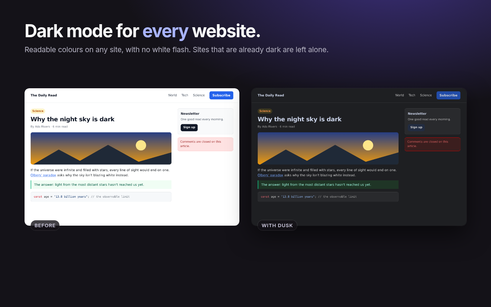
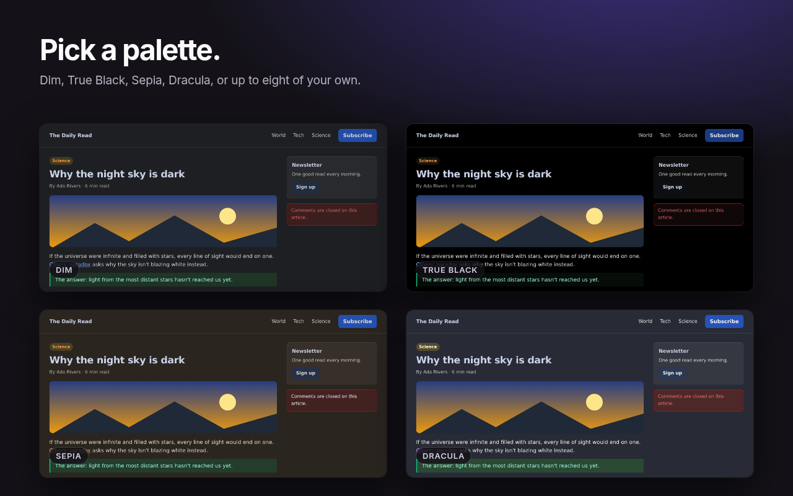
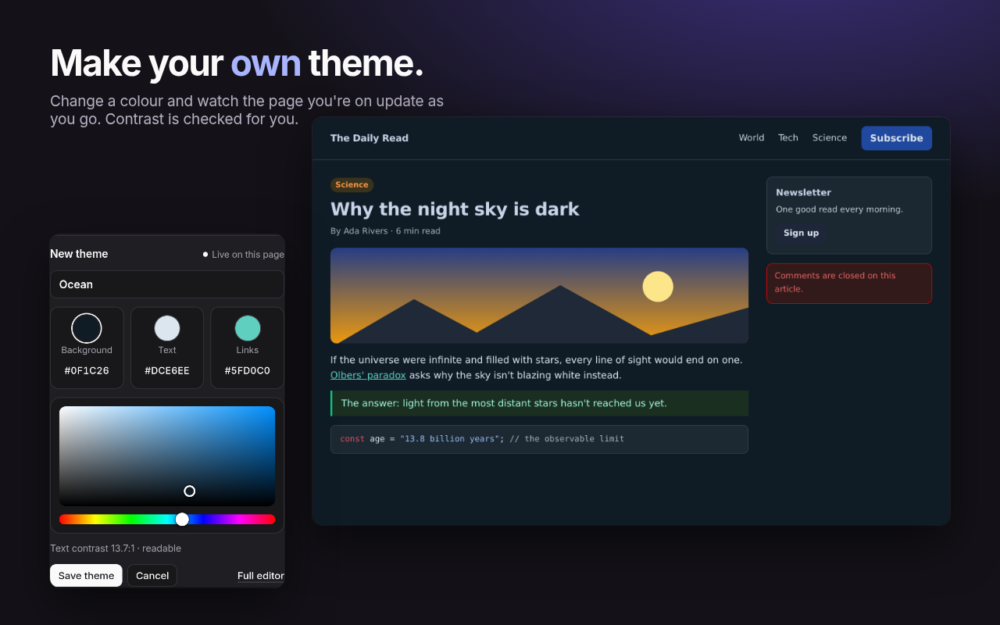

Dark mode for every website.
Dusk turns light websites dark, in colours that are easy on your eyes at night. Sites that already have a dark design are left alone.
Free. No account. No tracking.

Readable on any site
Dusk reads each page's own colours and rewrites them, so text stays readable, buttons keep their meaning, and photos look the way they should. Pages open dark straight away, with no white flash.
One click to switch off
Turn Dusk off for a site, a single page, or everywhere, from the toolbar icon or with Alt Shift D.
Your colours
Pick Dim, True Black, Sepia or Dracula, or make up to eight themes of your own and watch the page you're on change as you choose. Give a single site its own theme if you like.
Private by design
No account, no analytics, no tracking. Dusk's code can't make network requests, and your settings stay in your browser. Privacy policy


Questions or a site that looks wrong?
Report it on GitHub. Include the website address and, if you can, a screenshot.